|
|
|
программного обеспечения |
|
IObit Uninstaller |
Ninite |
ZipSoft |
||||||||||||||||||||||||||||||||||||||
|
|
||||||||||||||||||||||||||||||||||||||||
IObit Uninstaller
Описание программы: Установить программу можно тут -> Установить.
После успешной установки программы открывается стартовое окно. Оно разделено на две части: в правой части располагаются вкладки с соответствующей их названию информацией, а в левой части представлен список программ, которые установленны на Ваш компьютер. (Рис. 1.1). 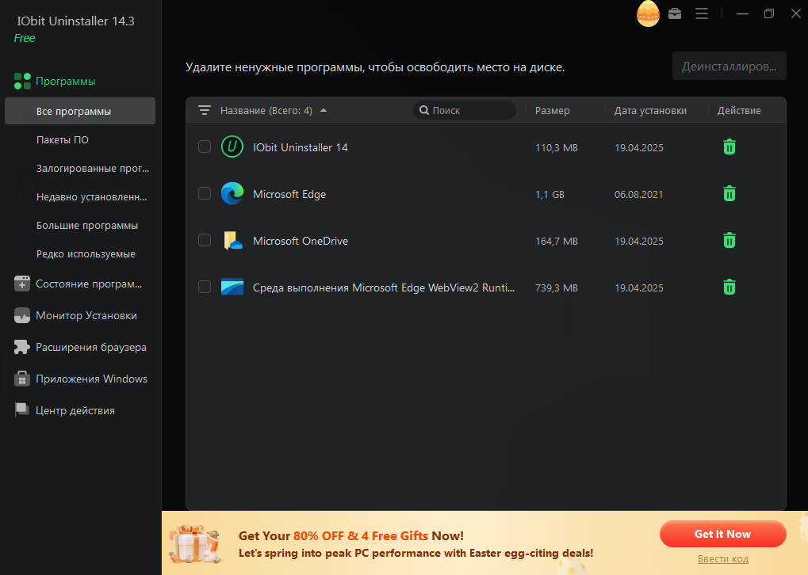 Для демострации работы программы было установленно несколько дополнительных программ, такие как: Googl Chrome и Notepad++. Чтобы удалить нужное программное обеспечение следует нажать на серый квадрат слева от иконки программы. После нажатия должна появиться зеленая галочка, как продемонстрированно на рисунке (Рис. 1.2). 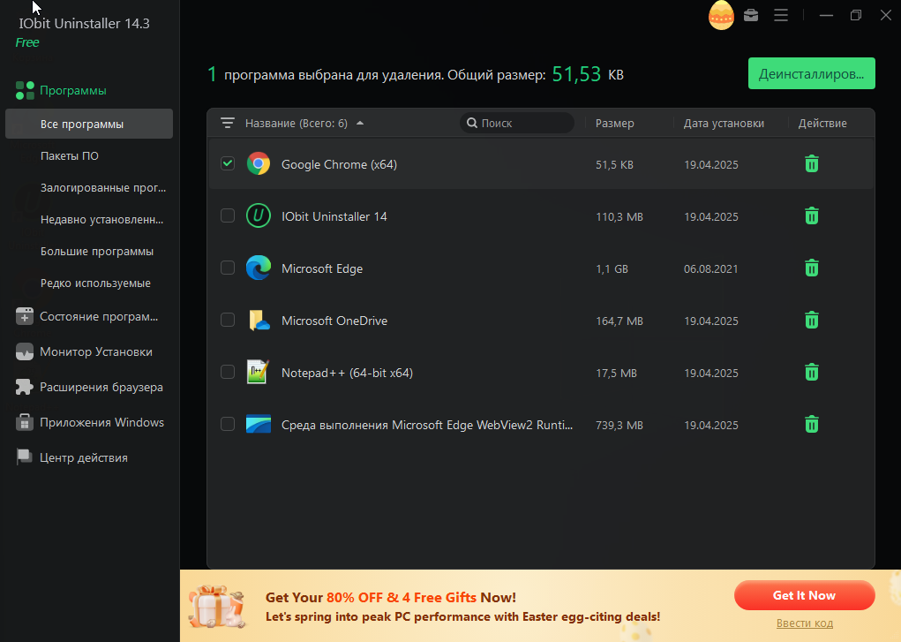 Далее нужно навести курсор и нажать на зеленую кнопку "Деинсталлировать", которая находится в правом верхнем углу экрана. После нажатия откроется окно с донастройкой деинсталляции. Нужно пометить галочками два пункта: "Создать точку восстановления перед удалением" (Создается копия последнего обновления программы, для возможного восстановления) и "Автоматически удалять все остаточные файлы" (Удаляются все остаточные фалы, которые могут мешать дальнейшей работе компьютера). После обозначения дополнительных пунктов нажимаем на кнопку "Деинсталлировать" (Рис. 1.3). 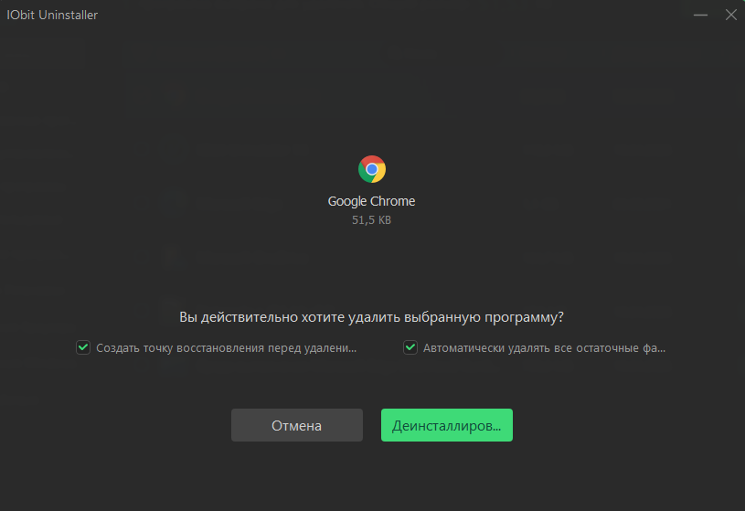 После нажатия на кнопку "Деисталлировать" программа запустит удаление выбранного программного обеспечения (Рис 1.4). 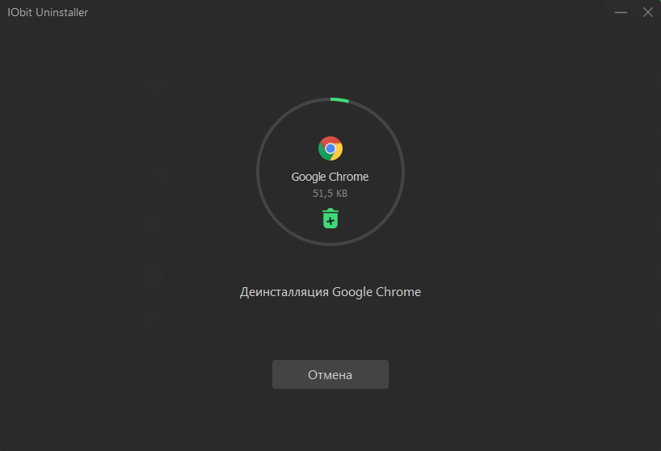 По завершению деинсталляции программа выведет окно, в котором говорится о том, что выбранная нами программа была успешно удалена (Рис. 1.5). 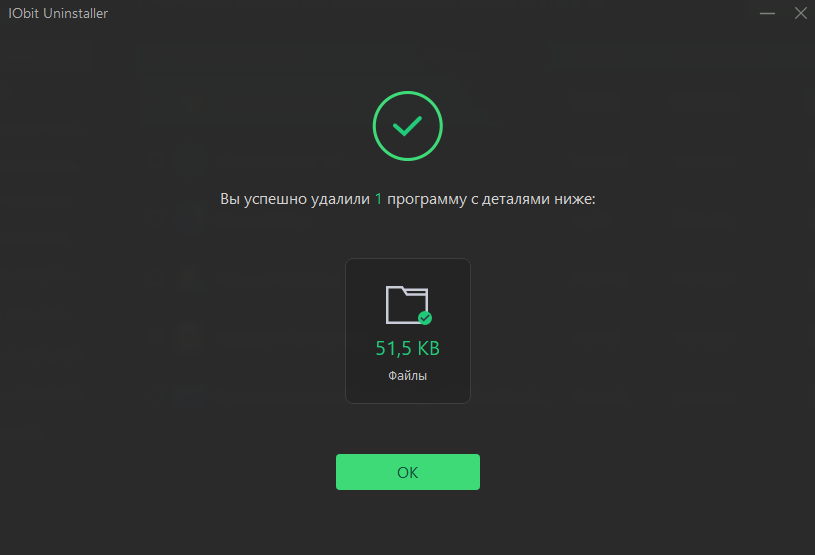 На Рисунке 1.6 показанно, что теперь Googl Chrome не числится в списке установленных программ. 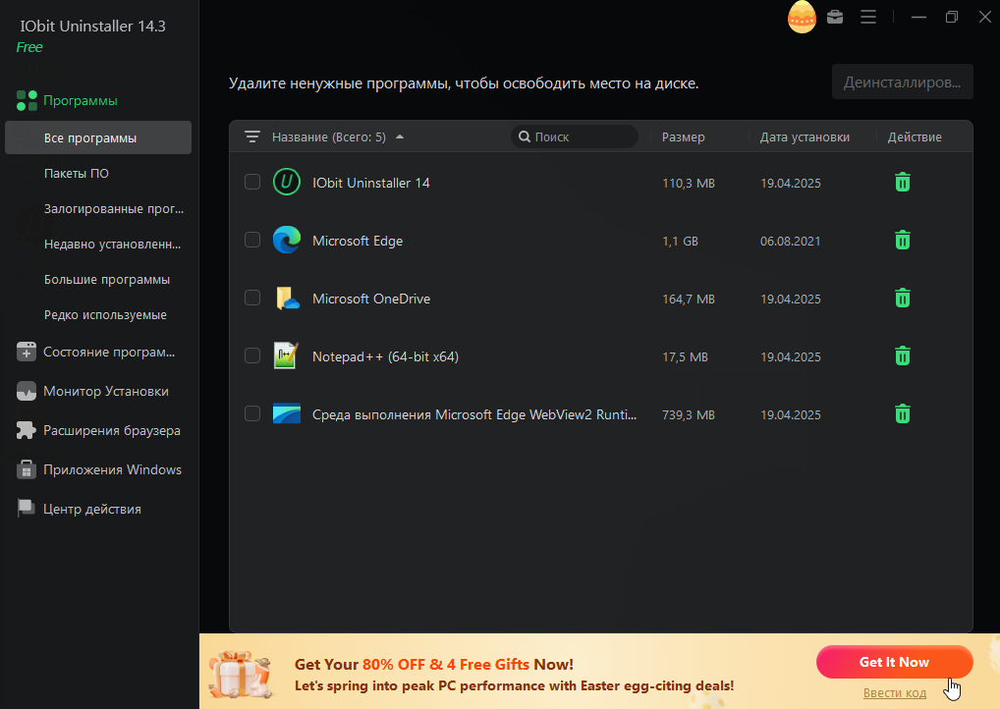 Так же с помощью IObit Uninstaller можно удалять сразу несколько программ. Для демонстрации были дополнительно установленны такие программы, как: AnyDesk и Zoom Workplace. Чтобы удалить сразу несколько программ нужно нажать на серые квадраты слева от иконок приложений, чтобы они пометились зелеными галочками. Для примера я выбираю следующие программы: AnyDesk, Zoom Workplace и Notepad++. После этого нажимаем на кнопку "Деинсталлировать" (Рис. 1.7). 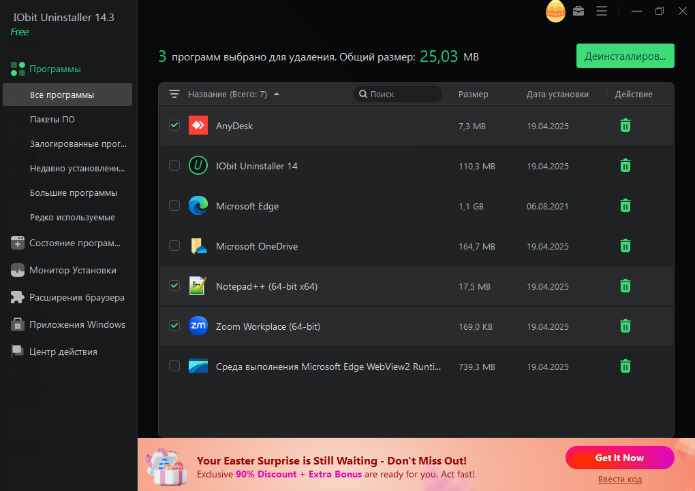 Далее, как и в примере с удалением одной программы, выводится окно с донастройкой деинсталляции, где так же следует отметить галочками предложеные пункты, и подтверждаем деинсталляцию (Рис. 1.8). 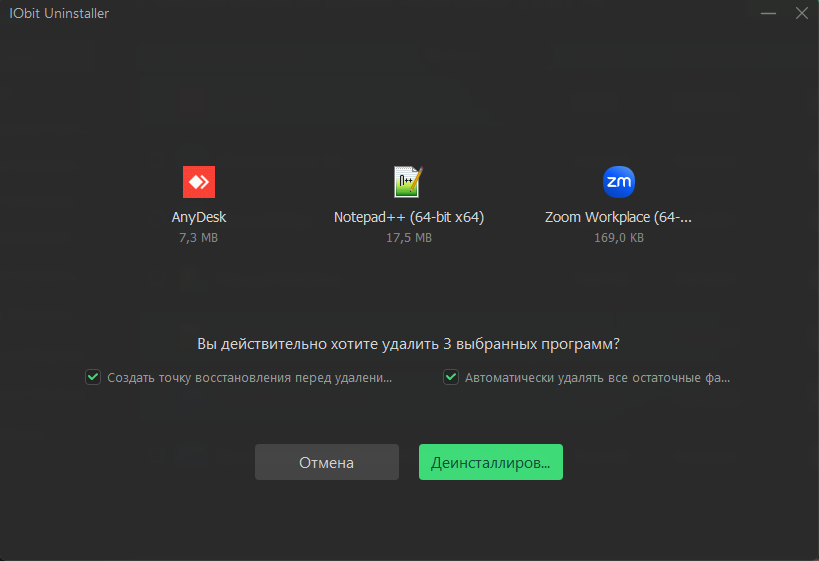 Запускается процесс удаления программ (Рис 1.9). 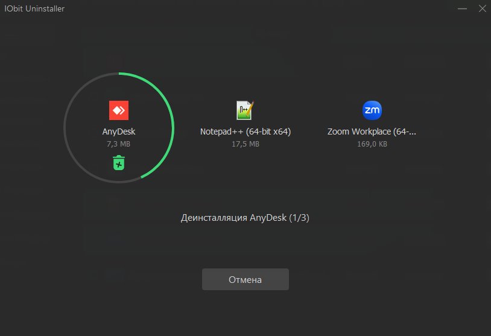 После завершения работы программы выводится окно с сообщением об успешном удалении 3-х программ (Рис. 1.10). 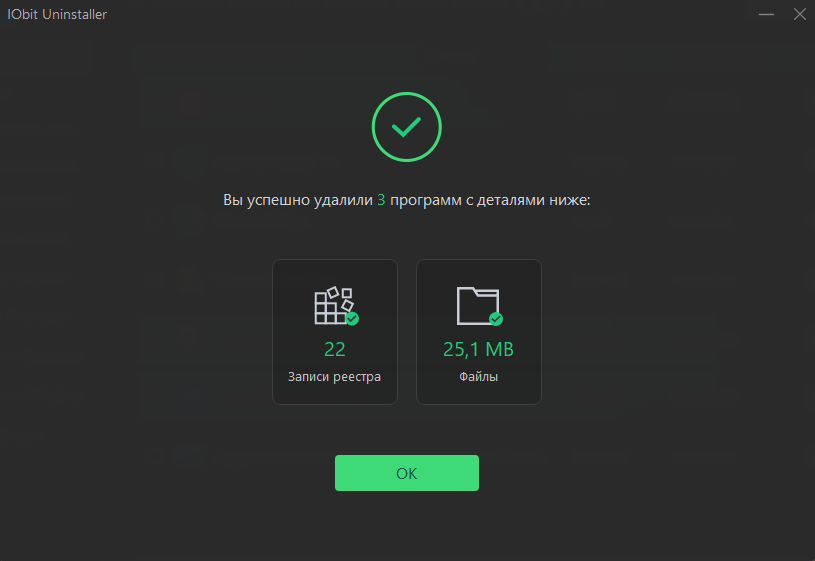 Теперь удаленные программы не числятся в списке имеющихся программ на компьютере (Рис. 1.11). 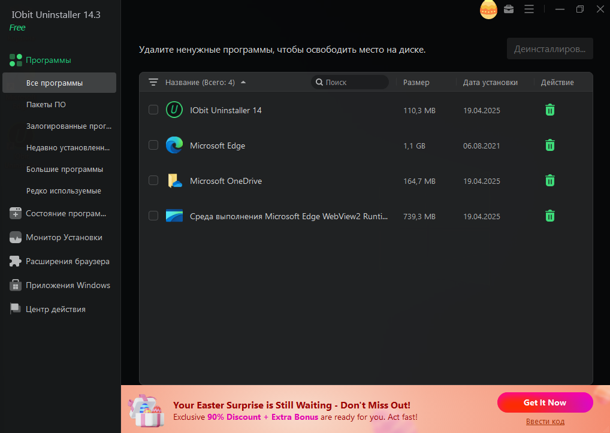 Еще одной возможностью данной программы является то, что с ее помощью можно удалять "мусорные" программы Windows, то есть те, которые, например, лично Вам не нужны для работы с компьютером. Для этого нужно перейти во вкладку "Приложения Windows" и как в прошлых примерах пометить желаемые программы. В моем случае это Xbox, Xbox Game Pad и Xbox Game Speech Window. Нажимаем на кнопку "Деинсталлировать" (Рис. 1.12). 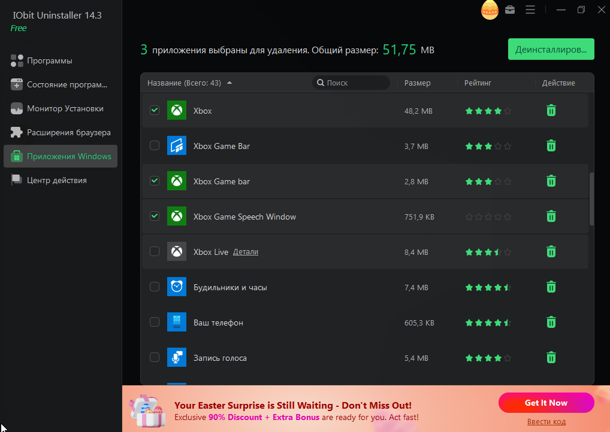 Выпадает окно с донастройкой деинсталляции, в котором помечаем галочками предложенные два пункта (Рис. 1.13). 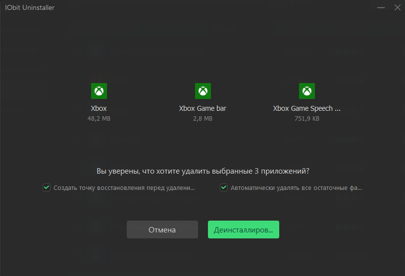 Далее запускается сам процесс деинсталляции (Рис. 1.14). 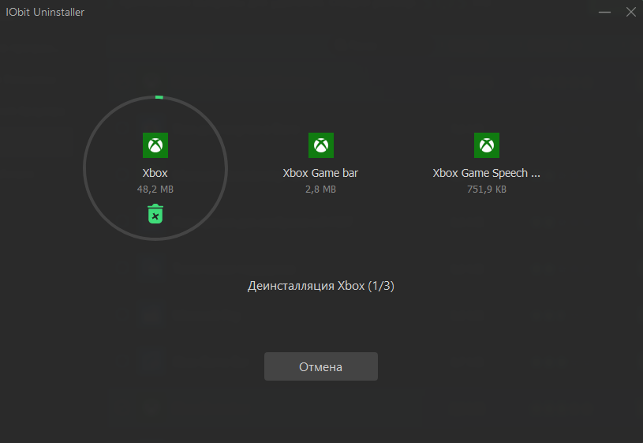 После завершения выпадает окно с уведомлением об успешном удалении программ (Рис 1.15). 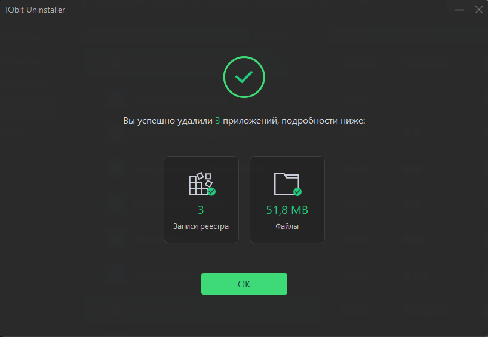 Список программ Windows без удаленных Xbox, Xbox Game Pad и Xbox Game Speech Window (Рис. 1.16). 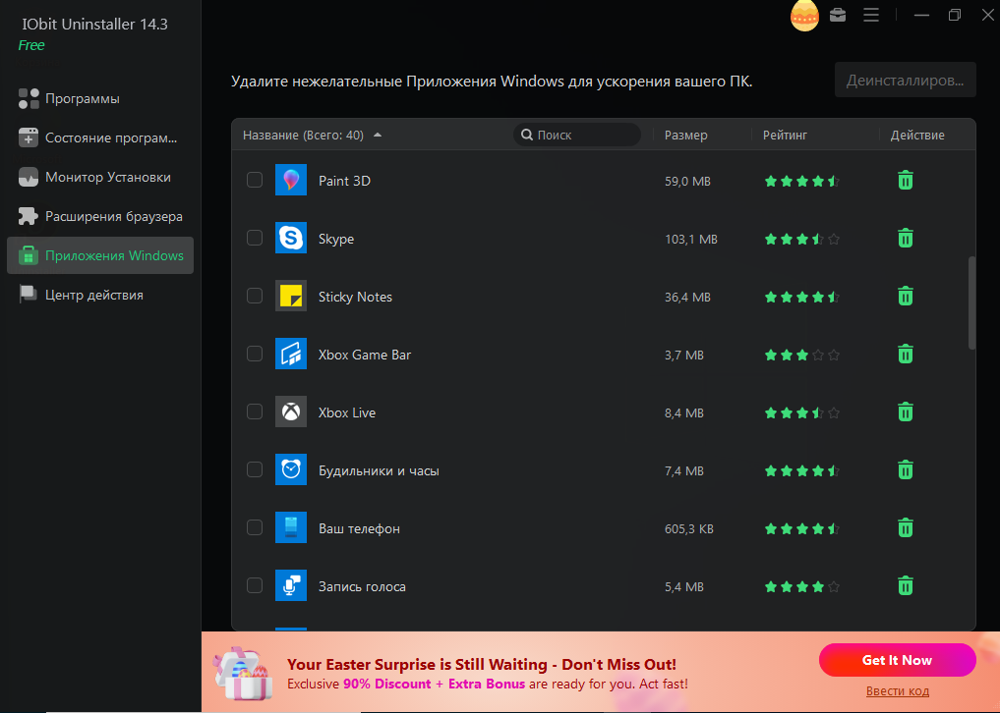 Таким образом была продемонстрированна работа приложения IObit Uninstaller (написать о минусах и плюсах и тд) Ninite
Описание программы: Кроме того, Ninite обеспечивает автоматическое обновление выбранных приложений, что позволяет пользователям быть уверенными в том, что они используют последние версии программного обеспечения с актуальными функциями. Программа также игнорирует нежелательные дополнения и панели инструментов, которые могут предлагаться при установке, гарантируя чистую и безопасную установку. Чтобы начать работать с утилитой Ninite следует пройти на сайт и, прокрутив вниз, можно будет увидеть весь перечень программ, предлагаемых для установки с помощью Ninite. (Рис. 2.1). 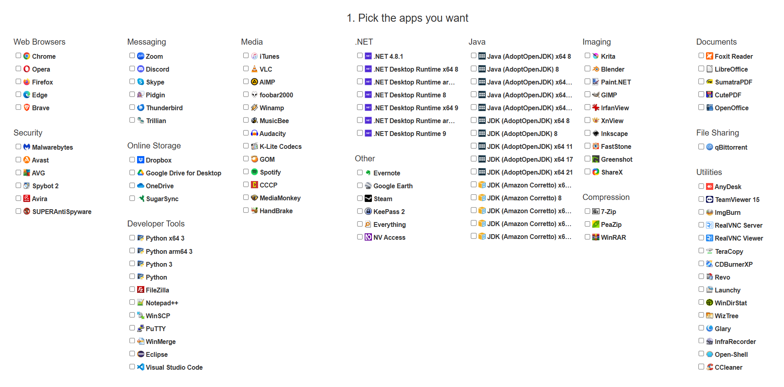 Следубщим шагом является выбор программ, которые Вы хотите установить. В моем случае я буду устанавливать следующие: Chrome, Zoom, Notepad++, Blender, 7-Zip и AnyDask (Рис. 2.2). Хочется отметить, что так же можно устанавливать только одну программу. Это делается по аннологии с примером установки сразу нескольких программ. 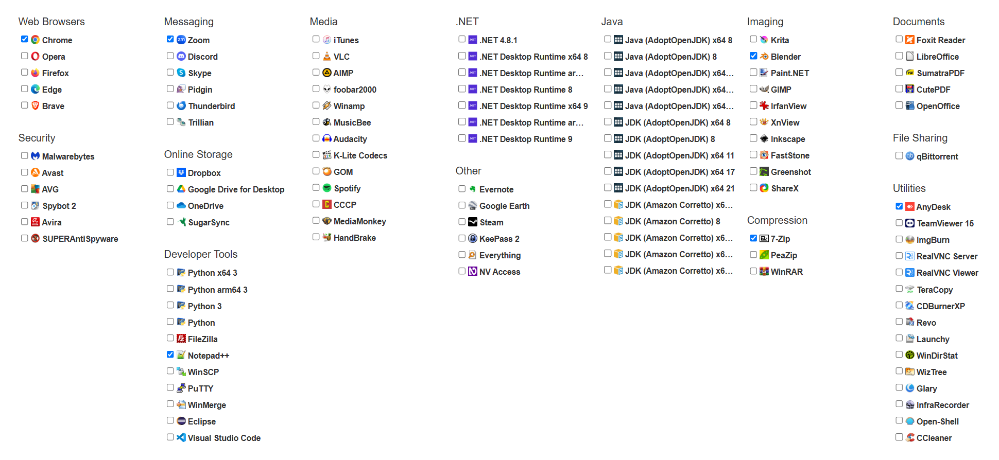 Далее нужно опуститься еще чуть ниже, где после выбора нужных программ будет активированна кнопка "Get Your Ninite" (Рис. 2.3). Нажимем на эту кнопку. 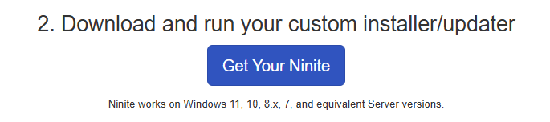 После нажатия Вас переведет на страницу с указанным списокм программ, которые вы выбрали и дальнейшими шагами. В первом шаге говорится о том, что наш установщик Ninite скоро будет загружен. В противном случае нужно повторить попытку загрузки, перейдя по ссылке. Во втором шаге говорится, что нужно запустить установщик Ninite и расслабиться, так как Ninite установит все самостоятельно без Вашего участия. В третьем (необязательном) шаге предлагается поделиться данной утилитой с друзьями (Рис. 2.4). 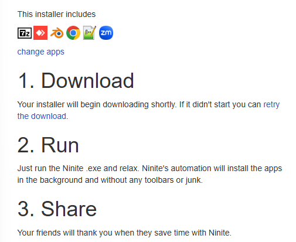 Далее в звгрузках у вас появится файл .exe, который нужно запустить (Рис. 2.5). 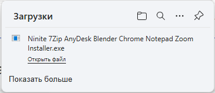 После запуска данного файла автомотически начнется установка всех выбранных программ в порядке очереди, выбранной Ninite. Например, на рисунке 2.6 показан процесс установки одной из программ - Chrome. По такому же принципу Ninite устанавливает и остальные программы. 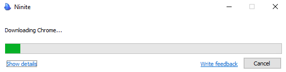 По оканачнии работы утилиты выводится окно с уведомлением об успешной установке программ и нажимаем "Close" (Рис. 2.7). 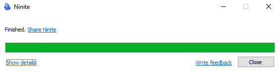 На рисунке 2.8 продемострированно, что выбранные нами программы установились и находятся на рабочем столе компьютера. 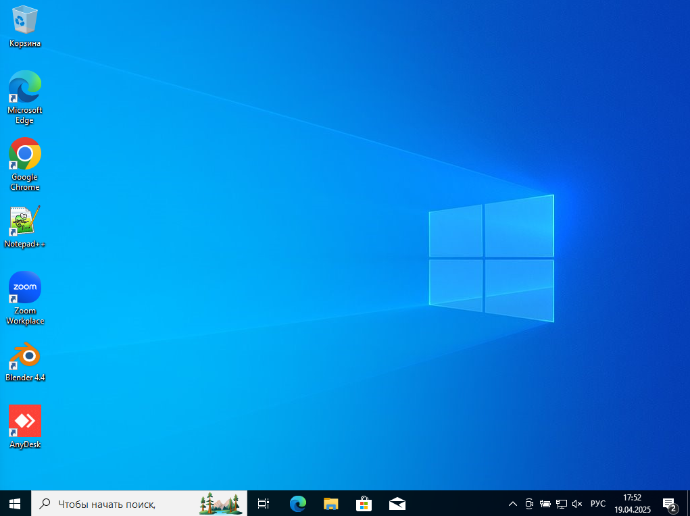
Таким образом, была продемострированна работа программы Ninite.
Описание программы: Установить программу можно тут -> Установить. После установки и запуска программы ZipSoft откроется окно со списком имеющихсы программ на компьютере на данный момент. Чтобы установить дополнительные программы нужно нажать на кнопку "Добавить" в правом нижнем углу экрана (Рис. 3.1). 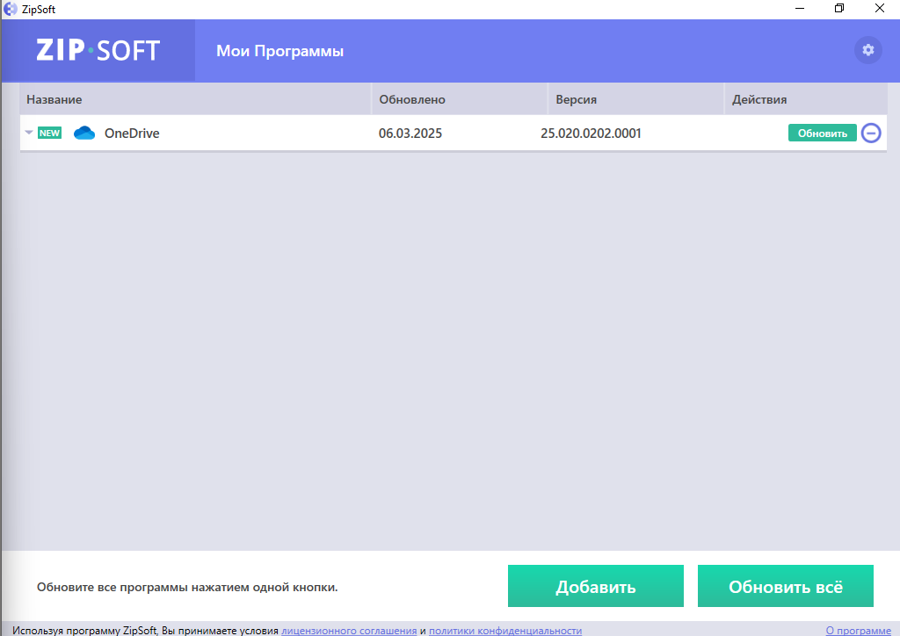 После нажатия на кнопку "Добавить" откроется окно, которое разделено на две части: в правой части указаны группы программ, по которым можно искать нужные Вам программные обеспечения, а в левой - находится непосредственно список программ. Так же в левом верхнем углу имеется поисковая строка, с помощью которой так же можно искать нужноt ПО для установки (Рис. 3.2). 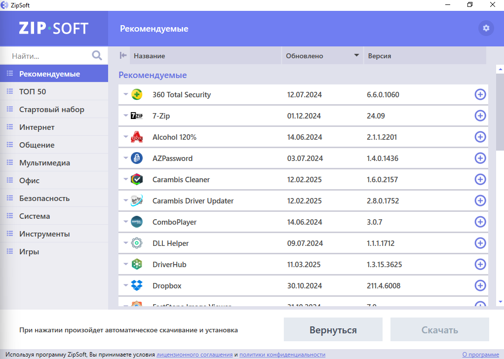 Для того, чтобы выбрать программы для дальнейшей установки следует нажимать на знак плюса в правой части строки программы. После нажатия выбранная программы будет вынесена вверх в отдел "Выбранное". Для примера я выбрала пять программ: 7-Zip, Google Chrome, ScreenShooter, Zoom, Telegram Desktop. После выбора программ нужно нажать на зеленую кнопку "Скачать" в правом нижнем углу экрана (Рис. 3.3). 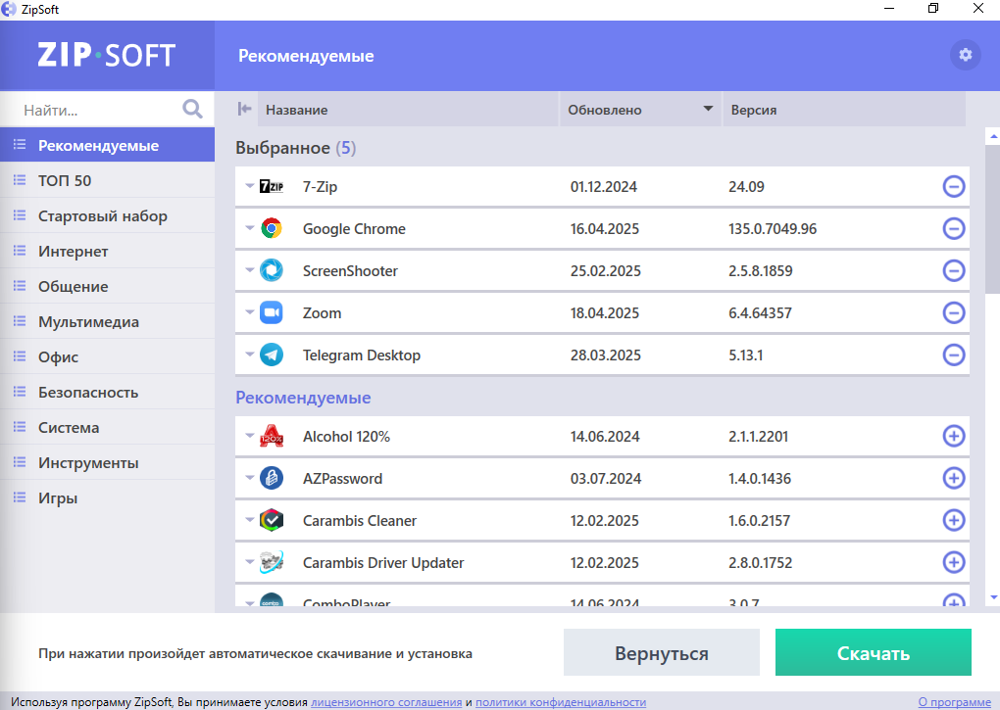 После нажатия на кнопку "Скачать" запустится установка программ в порядке очереди, которую определяет сам ZipSoft (Рис. 3.4). 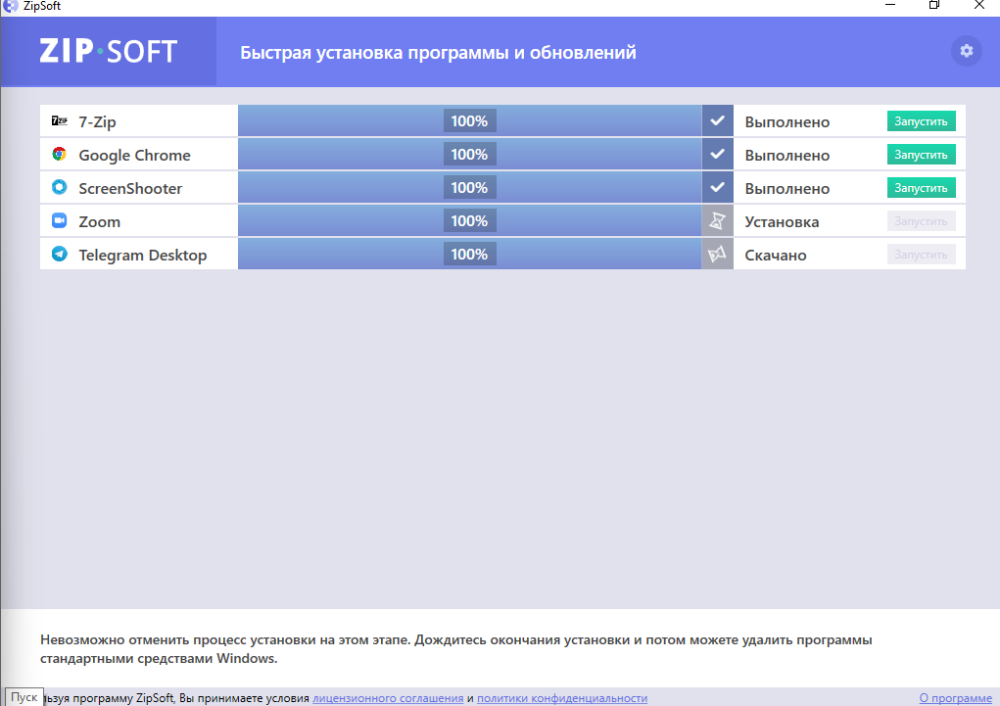 В процессе установки некоторых программ будут выскакивать окна, в которых нужно самостоятельно указывать нужные параметры для установки. Так произошло при установке Telegram Desktop (Рис. 3.5). 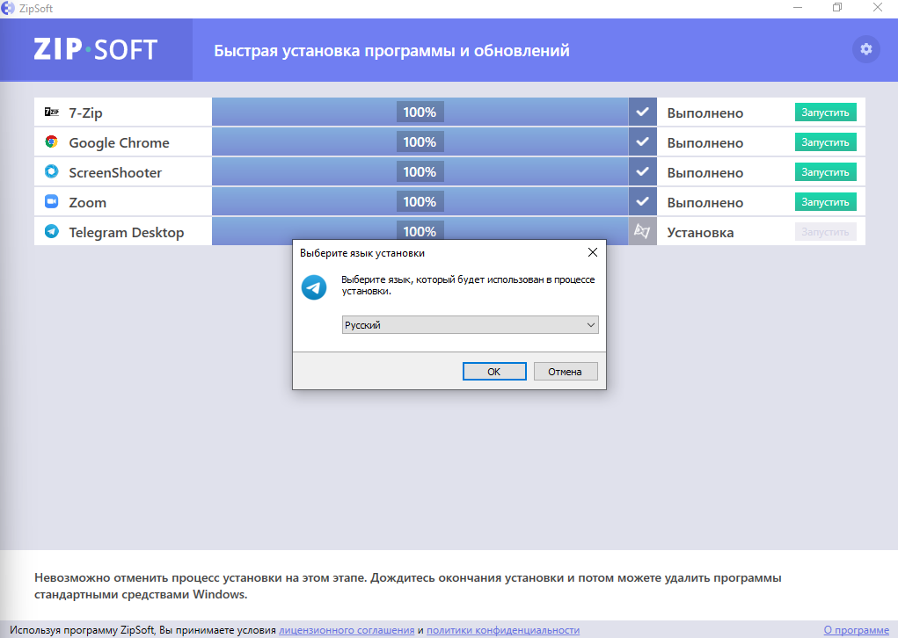 После завершения установки программа ZipSoft выдает окно с сообщением об успешной установке выбранных программ. Чтобы посмотреть список имеющихсы теперь программ на компьютере нужно нажать на зеленую кнопку "В "Мои программы"" в правом нижнем углу экрана (Рис. 3.6). После нажатия на кнопку будет показан список всех программ, которые теперь есть на компьютере (Рис. 3.7). 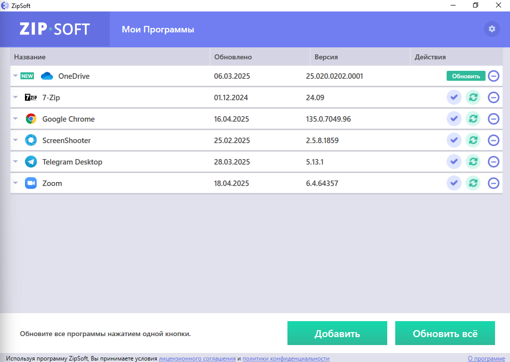 На рисунке 3.8 продемонтрирован рабочий стол компьютера с установленными программами. 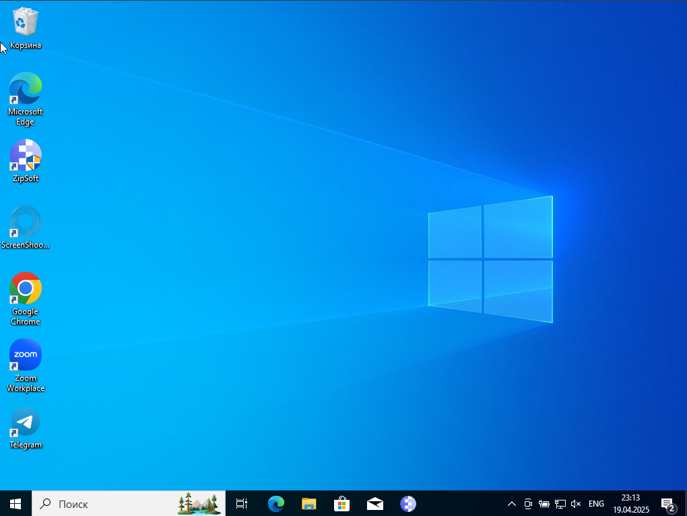
Таким образом, была продемонстрированна работы программы ZipSoft
|
||||||||||||||||||||||||||||||||||||||||
|
Критерий |
IObit Uninstaller |
Ninite |
Zipsoft |
|
Основная функция |
Удаление программ |
Автоматическая установка ПО |
Установка программ |
|
Простота использования |
Высокая |
Очень высокая |
Средняя |
|
Реклама/доп. предложения |
Есть в бесплатной версии |
Нет |
Нет данных |
|
Поддержка удаления |
Да |
Нет |
Нет |
|
БПоддержка установки |
Нет |
Да |
Да |
|
Набор поддерживаемых программ |
Любые программы |
Ограниченный список популярных |
Любые программы (зависит от версии) |
|
Подходит для новичков |
Да |
Да |
Да |
|
Требования к интернету |
Нет |
Да |
Зависит от функционала |
Вывод: из-за того, что ни одна из рассмотренных программ не обеспечивает одновременно и удаление и установку ПО, то оптимальным сочетанием для эффективного управления программным обеспечением является использование IObit Uninstaller вместе с Zipsoft. IObit Uninstaller обеспечивает надёжное и глубокое удаление программ, включая очистку остаточных файлов и записей в реестре, что критично для поддержания чистоты и производительности системы. Его понятный интерфейс и мощный функционал делают процесс деинсталляции доступным даже для неопытных пользователей.
В то же время Zipsoft дополняет эту связку возможностями по установке и управлению пакетами программ, что расширяет общие возможности по работе с ПО. Несмотря на то, что Zipsoft менее известен и требует некоторого опыта, он предлагает удобные инструменты для пакетной установки и обновления, которые отсутствуют в IObit Uninstaller. Такое сочетание позволяет покрыть полный цикл управления программами — от установки до качественного удаления — без необходимости использовать множество разрозненных утилит.
Краткая демострация программ представленна в презентации: